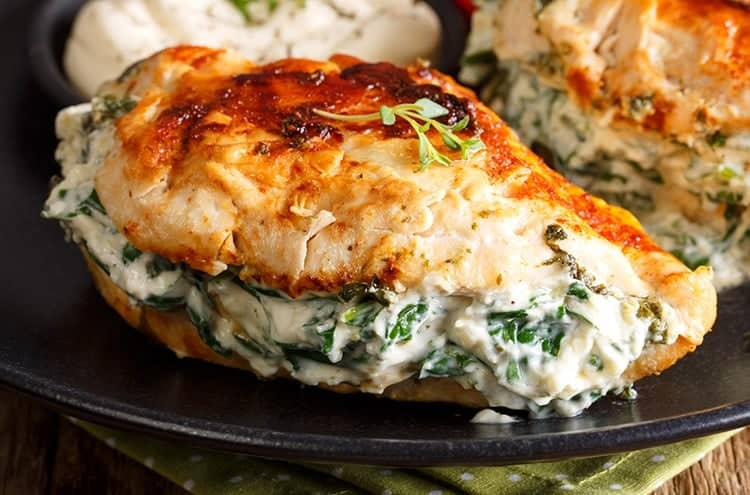

Stuffed Chicken Breast

Stuffed chicken breast is a great way to enhance normal baked chicken breast. This recipe can be modified to include many of your favorite stuffing ingredients to make a rich, tasty meal. This recipe serves 4 people and is done in 20-30 minutes.
Ingredients:
- 4 Chicken Breasts
- Olive Oil
- Shallots
- Garlic
- Spinach
- Salt and Pepper
- Oregano
- Thyme
- Red Pepper Flakes
- Cream Cheese
- Parmesan Cheese
Steps:
- Prep: Preheat your oven to 375 degrees fahrenheit and prepare your chicken by drying each one off and cutting a pocket into each one. Set aside.
- Cook Spinach: In a medium skillet over medium high heat, heat 1 tablespoon of oil and saute your shallots for about 3 minutes. Add in your garlic and chopped spinach. Then cook until your spinach has wilted. Then remove from heat.
- Make Seasoning: In a small bowl, mix your salt, pepper, oregano, thyme, and red pepper flakes. Then divide this mixture in half.
- Make Filling: In a medium bowl add your softened cream cheese, parmesan cheese, cooked spinach and shallots and half of your spice mix. Mix well to combine.
- Season and Stuff Chicken: Rub the remaining 2 tablespoons of oil onto each chicken breast and then season each one with the remaining spice mix. Stuff each chicken evenly with the spinach and cream cheese mixture until it has all been used.
- Bake: Place the stuffed breasts onto a 9x13 inch baking dish. Bake uncovered for 30-45 minutes, or until the chicken is cooked through and there is a nice brown crust on the top of each one.
Homepage